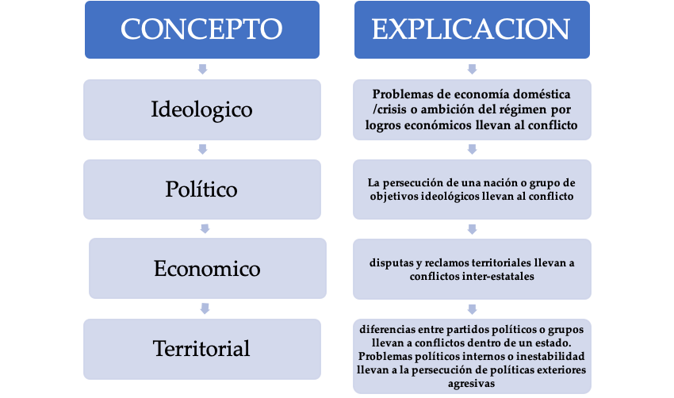
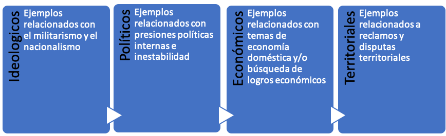
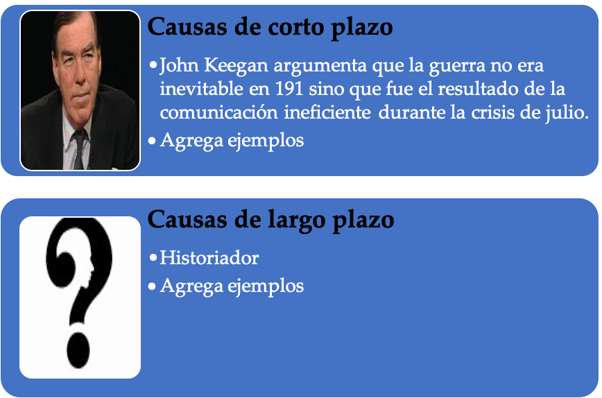

IB Docs (2) Team
IB Docs (2) Team

4. Primera Guerra Mundial: Planificación de ensayos
Esta página contiene ENFOQUES DE APRENDIZAJE para mejorar la redacción de ensayos sobre este tema, así como esquemas de ensayos específicos.
Tarea Uno
ENFOQUES DE APRENDIZAJE: Habilidades de pensamiento
Al considerar las causas de las guerras para la Prueba 2, deberás comprender cómo se aplican los siguientes conceptos relacionados con los estudios de casos que has realizado.
Causas ideológicas
Causas políticas
Causas económicas
Causas territoriales
Otras causas
De a dos, hagan coincidir la explicación del esquema con el concepto correspondiente en la tabla siguiente.

Tarea Dos
ENFOQUES DE APRENDIZAJE: Habilidades de pensamiento
Los términos de instrucción de una pregunta de ensayo te dicen cómo enfocar y estructurar tu ensayo.
Comparar - Exponer las semejanzas
Contrastar - Exponer las diferencias
Comparar y contrastar - Exponer las semejanzas y las diferencias
Ejemplo: Comparar y contrastar el papel del poder aéreo en dos guerras del siglo XX.
Discutir - Presentar una crítica equilibrada y bien fundamentada e incluir una serie de argumentos [enfoque temático]
Ejemplo: Discutir los efectos sociales y económicos de una guerra del siglo XX.
Evaluar - considerar los puntos fuertes y débiles
Ejemplo: Evaluar el papel de la tecnología en la determinación del resultado de dos guerras del siglo XX.
Examinar - considerar un argumento y las interrelaciones de diferentes maneras
Ejemplo: Examinar el papel de la economia en la causa de dow guerras del siglo XX
En qué medida - dar argumentos a favor y en contra
Ejemplo: ¿En qué medida fueron las disputas territoriales la causa de una guerra interestatal del siglo XX?
Causas de la Primera Guerra Mundial
Tarea tres
ENFOQUES DE APRENDIZAJE: habilidades de pensamiento y autogestión
Utiliza tu línea de tiempo de la Primera Guerra Mundial para crear tarjetas de repaso organizadas bajo los siguientes temas conceptuales. También crea tarjetas de repaso para clasificar el material en causas a largo y corto plazo.

Agrega historiadores a tus tarjetas de repaso. Usa el ejemplo para causas de corto y largo plazo a continuación

Tarea Cuatro
ENFOQUES DE APRENDIZAJE: Habilidades de pensamiento
Considere la siguiente pregunta de ensayo:
Examine las causas a largo y a corto plazo de una guerra del siglo XX
1. ¿Qué temas discutirás para responder a esta pregunta usando la Primera Guerra Mundial como ejemplo? (haz clic en el ojo para ver las pistas)
De largo plazo 1871-1913:
El papel de la ideología
El papel de la economía
El papel de las ambiciones territoriales
Otros
Crisis a corto plazo de 1914:
¿Era inevitable la guerra en 1914?
¿Cómo impactaron los factores impersonales anteriores en la Crisis de Julio
Otros factores
La siguiente estructura para un ensayo es una sugerencia de cómo podría abordarse.
2. De a dos, discutan a] la forma en que la estructura aborda el término de instrucción b] qué evidencia necesitarías para apoyar cada argumento temático c] cuál sería la frase inicial para cada párrafo.
Introducción: Establezcan los temas clave que cubrirán en su ensayo
Párrafo 1: Largo plazo 1871-1913 - papel de la ideología
Párrafo 2: Largo plazo 1871-1913 - papel de la economía
Párrafo 3: Largo plazo 1871-1913 - papel de la territorialidad
Párrafo 4: Corto plazo, junio-agosto de 1914; función de los factores de largo plazo en los acontecimientos y decisiones de corto plazo.
Párrafo 5: Corto plazo, junio-agosto de 1914; función de otros factores específicos del corto plazo.
Conclusión: Tal vez desee usted identificar aquí si los factores a largo o corto plazo son más importantes.
NB Considere también las diferentes perspectivas de los historiadores sobre las causas de la Primera Guerra Mundial e intente añadir uno o dos historiadores como evidencia adicional para apoyar sus argumentos.
Estrategias de guerra
Tarea cinco
ENFOQUES DE APRENDIZAJE: Habilidades de pensamiento
Considere la siguiente pregunta de ensayo:
Evalúe la influencia de la guerra en tierra para el resultado de una guerra del siglo XX entre estados.
Antes de consultar el esquema de ensayo que figura abajo, haga un plan con un compañero/a (haga clic en el ojo). Escriban las frases iniciales de cada párrafo y luego indiquen con viñetas la evidencia que darían para apoyar sus argumentos. ¿Qué historiadores podrían usar para apoyarlos?
Introducción: Declara que tu estudio de caso será la Primera Guerra Mundial. Explica tus principales argumentos temáticos: que la guerra en tierra determinó el resultado en 1918, pero que la guerra en el mar y la guerra en el frente doméstico también fueron significativas en el resultado final.
Párrafo 1 La guerra en tierra determinó el resultado de la Primera Guerra Mundial ya que las potencias centrales fueron decisivamente derrotadas en ese teatro.
Low puntos que se pueden considerar inclulyen:
La batalla del Marne
Fracaso de Verdun
Incapacidad de beneficiarse de la victoria en el Este y del Tratado de Brest Litvosk
La debilidad de Austria-Hungría en tierra
El fracaso de la ofensiva de Ludendorff
Párrafo 2 Además, las victorias aliadas en tierra fueron significativas para determinar el resultado...
Los puntos que se pueden considerar incluyen:
Milagro del Marne
Las ofensivas de Verdún, Somme y Brusilov
Cambrai y la contraofensiva en 1918
Impacto de la entrada en los Estados Unidos
Párrafo 3 Sin embargo, también se podría argumentar que la guerra en el mar fue el teatro que determinó el resultado de la Primera Guerra Mundial...
El fracaso de la alemana de submarinos
La entrada de los EE.UU. como resultado de la campaña de submarinos
Batalla de Jutlandia
Párrafo 4 Además, los aliados tuvieron gran éxito en la guerra en el mar...
Éxito del sistema de transporte de los aliados
La tecnología aliada
Batalla de Jutlandia
Impacto del bloqueo de los aliados en Alemania
Párrafo 5 Por último, la importancia de gestionar eficazmente el frente interno también debe considerarse como un factor clave para determinar el resultado de la guerra...
La asignación de recursos alemanes para el ejército a expensas de los civiles
La gestión británica de la economía
La incapacidad alemana de beneficiarse de la victoria en el Este
Entrada de los EE.UU.
Conclusión: Basándose en el peso de la evidencia y el análisis, ¿estás de acuerdo en que el argumento de que la guerra en tierra determinó el resultado de la Primera Guerra Mundial es más fuerte que tus otros argumentos sobre el papel de la guerra en el mar y el frente doméstico?
Efectos de la guerra
Tarea Seis
ENFOQUES DE APRENDIZAJE: Habilidades de pensamiento
De a dos, planifiquen el siguiente ensayo usando la Primera Guerra Mundial como su estudio de caso:
Examine los efectos de una guerra interestatal del siglo XX
Haz clic en el "ojo" para ver los temas de los párrafos que podrías usar para desarrollar tu plan de ensayo.
- El costo humano
- Consecuencias económicas
- Consecuencias políticas
- Consecuencias sociales
- Problemas con el Acuerdo de Versalles
- Impacto internacional
Tarea siete
ENFOQUES DE APRENDIZAJE: Habilidades de pensamiento
Planea el siguiente ensayo. Haz clic en el ojo para obtener sugerencias sobre la estructura y los temas a considerar.
"Los cambios territoriales fueron el desafío más significativo para el éxito de la paz.” ¿Hasta qué punto está de acuerdo con esta afirmación?.
Aserciones
Párrafo 1
- Cambios territoriales - Alemania: implicaciones y desafíos para la paz
Párrafo 2
- Cambios territoriales - otras potencias derrotadas: implicaciones y desafíos para la paz; Austria, Hungría, antiguos territorios otomanos, Turquía y revisión de los acuerdos; antiguo imperio ruso; nuevos estados sucesores
Párrafo 3
- Cambios territoriales - antiguas colonias; reivindicaciones coloniales; sistema de mandato
Contraargumentos
Párrafo 4
- Cambios políticos e ideológicos: Rusia comunista desde octubre de 1917; Italia fascista desde 1922; debilidad de los nuevos estados democráticos; autodeterminación y nacionalismo.
Párrafo 5
- Consecuencias económicas de la Primera Guerra Mundial
Tarea ocho
ENFOQUES DE APRENDIZAJE: Habilidades de pensamiento
De a dos, planifiquen el siguiente ensayo usando la Primera Guerra Mundial como su estudio de caso:
Evalúe las fortalezas y limitaciones de un tratado de paz del siglo XX.
Necesitan abordar el término de instrucción: Evaluar
Haz clic en el ojo para obtener ideas para la estructura del ensayo
Parte 1 Fortalezas
- La imposición de cláusulas y la culpabilidad por la guerra
- Cláusulas territoriales
- Cláusulas económicas
- Cláusulas militares
Parte 2 Limitaciones
- La imposición de cláusulas y la culpabilidad por la guerra
- Cláusulas territoriales
- Cláusulas económicas
- Cláusulas militares
Algunas pruebas de apoyo sobre las fortalezas del Tratado:
- Objetivos de la guerra de septiembre de Alemania [1914]
- La dura naturaleza del Tratado de Brest Litovsk
- Los "relativamente indulgentes" (Nial Ferguson) términos de la paz
Algunas pruebas de apoyo sobre los puntos débiles del Tratado:
- Contradijo los 14 puntos de Woodrow Wilson: autodeterminación [territorio alemán / colonias y autodeterminación política]
- Las fronteras de Alemania estaban "sangrando" (Historiador W.H. Dawson)
- J.M. Keynes consideraba que las reparaciones eran demasiado elevadas y no permitirían a Alemania recuperarse económicamente
- opinión de Harold Nicholson es que el Tratado se basaba en la "venganza".
También debería intentar incluir los puntos de vista de algunos historiadores. Por ejemplo:
La historiadora Ruth Henig argumenta que no fueron las claúsulas del tratado los que fallaron, sino su "falta de aplicación" lo que hizo que finalmente fracasara. Este punto de vista es apoyado por el historiador William R. Keylor quien sugiere que "el Tratado de Versalles demostró ser un fracaso no tanto por los defectos inherentes sino porque nunca se puso en pleno vigor". (ver 3. Primera Guerra Mundial: Efectos (ENFOQUES DE APRENDIZAJE) para más discusión sobre el Tratado y para los puntos de vista de los historiadores sobre el Tratado)
Nótese que este plan también funcionaría para la pregunta de ensayo de la Prueba 3 para la sección 15: La diplomacia en Europa (1919- 1945)
"El Tratado de Versalles fue una paz justa y razonable". ¿Hasta qué punto está de acuerdo con esta aseveración?
 Twitter
Twitter
 Facebook
Facebook
 LinkedIn
LinkedIn